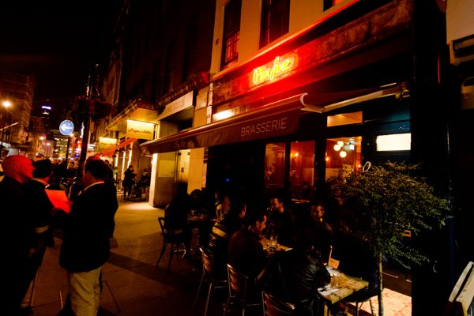
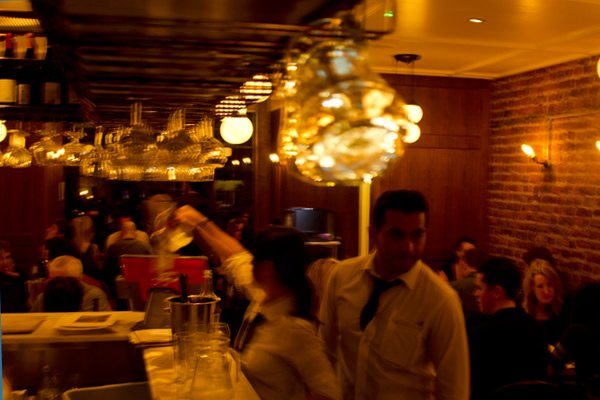
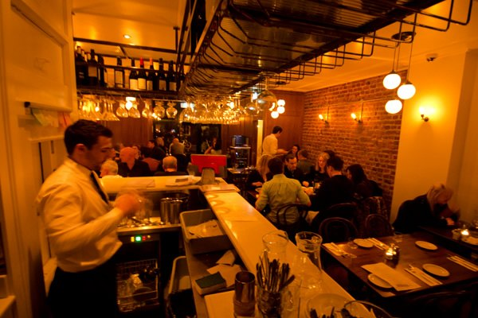
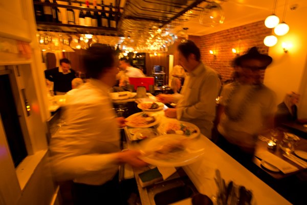
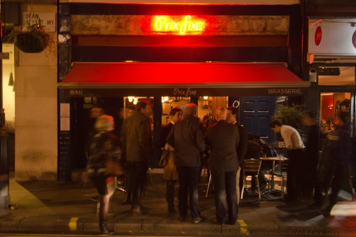
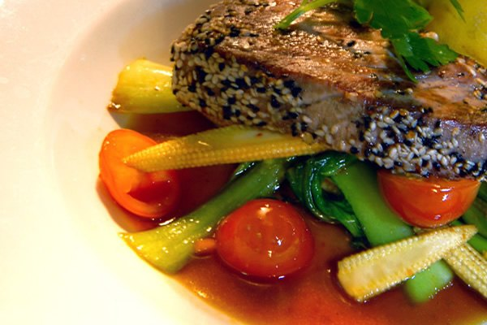
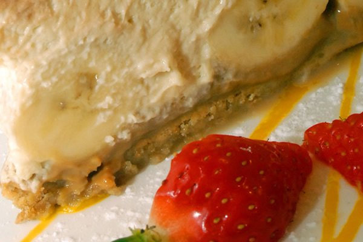

The brasserie
A classic French bistroà Soho
Prix Fixe is one of Soho's most charming French restaurants. Daily specials, set menus and a fabulous, very affordable French meal, a few steps from the theatres.
Midi
Lunch, quick and bright
Lunchtimes are made for an informal business lunch or a long catch-up. Two courses from the set menu for £19.90, and you're back at your desk in good time.
Our steak frites are the dish people come back for, and Harden's readers call the set menus "brilliant value" for the West End. Alongside them, a wide range of fresh fish and seafood, from Maldon oysters to seabass and seafood cassoulet.

Soir
Candlelight and a piano
In the evening the brasserie turns romantic. Diners eat by candlelight to music from one of our rather eccentric and charming pianists.
Seeing a show? The pre-theatre menu gets you out with time to spare, and the bar is ready for a Kir Royale afterwards.



Groups & private hire
The basement room
Our downstairs dining room is available for exclusive hire and seats groups of 25 comfortably. Birthdays, office lunches, a team night before a show.
Online booking takes up to 10 guests. For anything larger, call us or send a group enquiry and we'll put together a set menu for your party.
Photos




